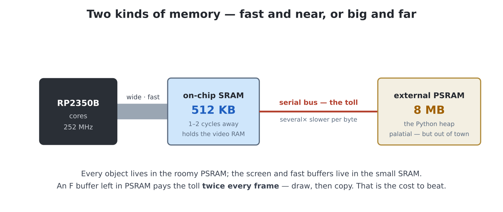
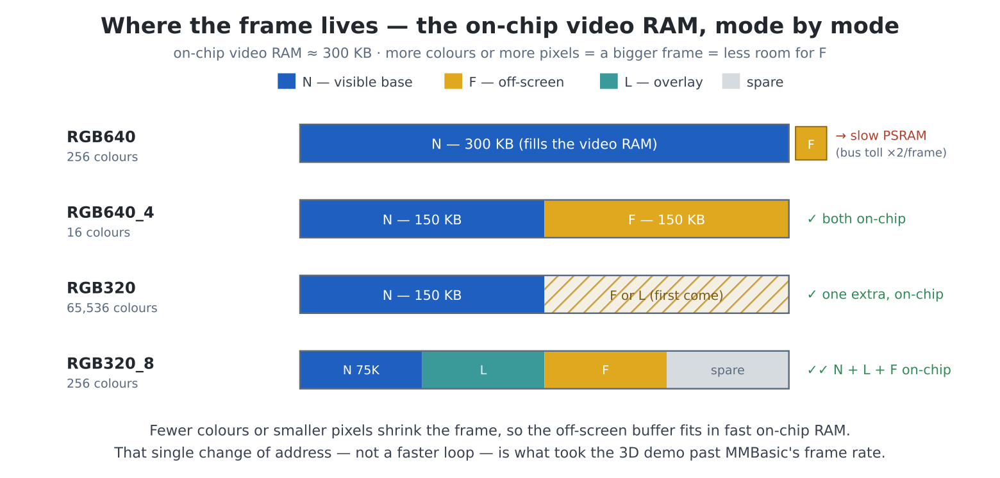

Sooner or later a program of yours will be too slow — the shooter stutters at forty rocks, the plot takes eleven seconds, the gadget pauses mid-song. This chapter is the discipline for that day. It has one law, a ladder of remedies, and a second resource — memory — whose management is speed more often than beginners suspect. The law comes first because everything else depends on it:
Measure. Never guess. Programmers’ intuitions about what is slow are famously, reliably wrong — and you own a microsecond stopwatch.
edit("bench.py") — the last resident of your toolkit
library shelf:
# bench.py -- measure before you optimise.
# import bench
# bench.it(my_function) # prints and returns best-of
# microseconds
import time
def it(fn, repeat=5):
"""Time fn() five times; report the BEST run in
microseconds."""
best = None
for _ in range(repeat):
t0 = time.ticks_us()
fn()
us = time.ticks_diff(time.ticks_us(), t0)
if best is None or us < best:
best = us
print(f"{fn.__name__}: {best} us (best of {repeat})")
return best
if __name__ == "__main__":
def nothing():
pass
it(nothing) # the cost of measuring itselfWhy best-of, not average? Because the slow runs are
interruptions — a timer callback, a garbage collection — and you are
measuring your code, not the weather. (ticks_us is
ticks_ms’s sharper sibling; same wrap-safe
ticks_diff.)
Every innocent line — x = x + 1 — is, underneath, a name
lookup, a type check, an object created for the result. At 252 MHz the
machine does this fantastically fast per step, and a loop of a
hundred thousand steps still adds up. Knowing where the costs hide is
the craft; here they are, measured rather than asserted.
edit("speedlab.py"):
import math
import micropython
import bench
N = 20000
def globals_loop():
global gx
gx = 0
for i in range(N):
gx = gx + 1
def locals_loop():
x = 0
for i in range(N):
x = x + 1
def dotted():
total = 0.0
for i in range(N):
# module.name looked up N times
total += math.sin(0.5)
def hoisted():
total = 0.0
sin = math.sin # looked up ONCE
for i in range(N):
total += sin(0.5)
def churner():
for i in range(N // 10):
s = "score: " + str(i) # a new string every lap
@micropython.native
def native_loop():
x = 0
for i in range(N):
x = x + 1
print(f"--- {N} laps each ---")
g = bench.it(globals_loop)
l = bench.it(locals_loop)
bench.it(dotted)
bench.it(hoisted)
bench.it(churner)
n = bench.it(native_loop)
print(f"\nlocals beat globals by {g / l:.1f}x; native beats "
f"plain "
f"by {l / n:.1f}x")Run it and keep the printout — those are your machine’s numbers. The lessons, in expected order of magnitude:
sin = math.sin
before, sin(...) within.churner
makes two thousand strings nobody keeps; each costs time now and
garbage-collection time later. Hot loops should reuse, not
manufacture — the memory half of this chapter returns to it.@micropython.native — one decorator,
roughly double the speed. Nothing to install: the
micropython module is built into the interpreter itself
(like machine), and the firmware carries a real ARM
compiler — when a decorated function is defined, machine code
is generated on the spot, living in RAM alongside your other objects (so
it costs memory, not flash; keep it for the measured-hot few). Its
extreme sibling @micropython.viper goes several times
further with C-like typed integers — a Part VI door to open the day a
measured loop truly demands it — and, for completeness,
@micropython.asm_thumb writes inline ARM assembly, the last
rung before C itself. The MicroPython docs hold the rules for all
three.micropython.const(...): module-level integer
“variables” declared _X = const(42) are folded in at
compile time — free speed for magic numbers in hot code.Micro-craft is the bottom rung. When something is slow, climb from the top:
sqrt. (And chapter 23’s promised grown-up answer to
tunnelling lives here: don’t cap speed — sub-step: move in
several small steps per frame, testing each; or test the swept line from
old to new position. Better algorithm, not faster arithmetic.)fill,
blit, tilemap and pcsprite call
is thousands of pixel-loops done in C — the reason this book never once
set pixels in a Python loop to clear a screen. Likewise
ulab: chapter 31’s arrays are C loops in costume;
array-shaped work belongs there (“a hundredfold” was measured, not
marketed).native/viper for the
measured-hot few.screen(hdmi.RGB640, 378)
runs the whole machine half again faster (Appendix D’s table; the
display couples to the clock, which is why it’s set together). Honest
last resort — it speeds bad code and good code equally.The ladder’s rungs were about instructions; there is one more lever, and it is about bytes. This machine has two kinds of RAM (chapter 1 mentioned it quietly): 512 KB of on-chip SRAM — the processor’s own, answering in a cycle or two — and the 8 MB of external PSRAM where the heap lives, reached over a serial bus at several times the cost per byte. Palatial, but out of town.

Why a games chapter cares: a double-buffered frame (chapter 17) is,
before it is anything else, a byte-moving exercise. Fill F, draw the
scene on F, copy F to the screen — every frame touches every byte of a
screen or two. The visible screen sits in on-chip video RAM (the scanout
hardware reads it sixty times a second; it could hardly live anywhere
slower). But hdmi.create()’s F buffer comes from the heap —
PSRAM — and in RGB640 that is ~300,000 bytes crossing the
slow bus twice every frame: once as you draw, once as the copy reads
them back.
The firmware’s trick: three modes don’t fill the video RAM,
and create() claims the idle space — on-chip — instead of
the heap:
hdmi.RGB640_4 — 640 × 480 in 16
colours: 4 bits a pixel is a 150 KB frame, half the video RAM, so F
takes the other half. (Fewer colours is also half the bytes to
touch — the saving compounds.)hdmi.RGB320 — 320 × 240 in full colour
is also a 150 KB frame, and the same deal applies if you
create() before layer(): the spare
half is first come, first served, and whichever of the two asks second
is told so (layer() raises; close F and it works).hdmi.RGB320_8 — 320 × 240 in 256
colours is a 75 KB frame, a quarter of the video RAM — so the
screen, the chapter-17 overlay layer and the F buffer
all fit on-chip at the same time, no first-come rule, and a
full copy("F","N") is half of RGB320’s. The only mode that
offers an overlay and a fast double buffer together: scenery on N, HUD
on L, compose on F.
Numbers, not marketing — this chapter’s rule. The port’s 3D ship demo at 378 MHz went from 19 fps (8-bit mode, F in PSRAM) to past MMBasic’s 42 fps (RGB640_4, both buffers on-chip), the two big contributors being the engine’s single-precision hardware maths and this section’s change of address. Same algorithm, same drawing code; the difference is which RAM the bytes lived in. MMBasic’s fastest 3D uses exactly this layout — its famous 4-bit game mode — which is why the port grew one to match.
So when a drawing-heavy game disappoints, ask where its bytes live before tuning another loop: at 640 × 480, sixteen colours with both buffers on-chip out-runs two hundred and fifty-six with one buffer out of town — and for wireframe-and-sprite games sixteen is not even a compromise, it is the aesthetic.
The heap — where every object lives — is the 8 MB PSRAM (chapter 1), which is palatial for this class of machine. You will not run out by accident; you will meet its two subtler taxes. First, the meter:
import gc
print(gc.mem_free()) # bytes available right now
# take out the recycling, on demand
gc.collect()
print(gc.mem_free()) # ...usually moreedit("memlab.py") — watch objects cost and return:
import gc
gc.collect()
start = gc.mem_free()
print(f"free at start: {start}")
junk = [list(range(10)) for _ in range(2000)]
after = gc.mem_free()
print(f"after 2000 lists: {after} (cost {start - after})")
junk = None # drop the only reference...
gc.collect() # ...and reclaim
end = gc.mem_free()
print(f"after collect: {end}")The two taxes, then:
churner was the villain demo), and collect on your
schedule — gc.collect() at a level change, a menu, a
serve, so the pause lands where no player can feel it.MemoryError with megabytes “free”).
The professional habit: pre-allocate the big things once, at
start-up — bytearray(4096) buffers reused forever,
the particle list made at boot and recycled — which is precisely how the
firmware’s own buffers behave, and why your uptime-champion gadget
(chapter 34) should own all its furniture before the loop begins.Four hundred falling stars, written naively, then tuned by this
chapter’s rules — with the stopwatch adjudicating.
edit("swarm.py"):
import time
import bench
W, H, N = 640, 480, 400
def make_stars():
return [[i * 1.6 % W, (i * 7.3) % H,
40.0 + (i % 5) * 30] for i in range(N)]
# --- version 1: innocent
def naive(stars, dt):
for s in stars:
s[1] = s[1] + s[2] * dt
if s[1] > H:
s[1] = s[1] - H
# a string, every frame,
label = "stars: " + str(len(stars))
return label # for no one
# --- version 2: this chapter applied
def tuned(stars, dt, _H=H):
for s in stars:
# locals, one calculation
y = s[1] + s[2] * dt
if y > _H:
y -= _H
s[1] = y
# the HUD can update ITSELF
return None
# when the count
# CHANGES
stars = make_stars()
f1 = bench.it(lambda: naive(stars, 0.016), repeat=9)
stars = make_stars()
f2 = bench.it(lambda: tuned(stars, 0.016), repeat=9)
print(f"\ntuned is {f1 / f2:.2f}x quicker -- same stars, same "
f"physics")
budget = 16667
print(f"frame budget at 60 fps: {budget} us")
print(f" naive swarm uses {f1 * 100 // budget}% of it")
print(f" tuned swarm uses {f2 * 100 // budget}% of it")(The lambdas wrap arguments for bench.it — chapter 27’s
trick in lab clothes.) The tuned version does the same physics
— it merely stops paying rent it never owed: no per-frame string, no
repeated subscript arithmetic, the bound _H local. On
big-array days, rung 2 awaits: the same update as
ys = ys + spds * dt in ulab is another order again (chapter
31’s race, now with a purpose). And the pattern scales straight into
chapter 24: put clock.fps on the shooter’s screen,
bench.it its update phase, hoist and de-churn its hottest
loop, and watch a number you can defend go up.
Coming from MMBasic: the deal hasn’t changed — MMBasic was quick because its heavy commands were C, and its escape hatch was the CSUB. Here the C commands are
blit/tilemap/ulab and the escape hatches arenative,viperand (chapter 36 points the way) C modules of your own.
ticks_us
around the whole loop body, keep a worst variable, show it
in the HUD. Play a level. Where do the spikes land — and do they
coincide with sounds, serves, or (aha) garbage collections?gc.collect() to Breakout’s serve moment and
re-measure the worst frame. Scheduled housekeeping, measured benefit —
this is the whole discipline in one edit.speedlab.py at 252, then
screen(hdmi.RGB640, 378) and again. Does everything scale
by exactly 1.5? (Nearly — and why nearly is a lovely rabbit
hole: PSRAM and peripherals have clocks of their own.)const experiment: a hot loop using module-level
LIMIT = 42 vs _LIMIT = const(42). Small, real,
and now your number rather than folklore.bytearray 10% bigger each time, printing
gc.mem_free() — how big is the last success? Now
pre-allocate that size first at a fresh boot and note how much
further you get. (Chapter 31’s “mind the RAM”, explained at last.)RGB320,
close(); create() (F lands on-chip) versus
close(); layer(); create() (F pushed to PSRAM) — same mode,
same bytes — and ticks_us around
hdmi.copy("F", "N"), best of fifty, for each. The ratio you
measure is the bus toll from “Where the frame lives”, isolated to a
single number.clock.fps and worst-frame in the
HUD, the update phase benched before and after tuning, particle list
pre-allocated and recycled (an object pool: dead sparks are
reused, never collected), gc.collect() on wave change.
Target: sixty solid at wave five, numbers to prove it.bytearray, blitted as a (buffer, w, h) surface
— chapter 16’s tuple form) fast enough to be hypnotic. Per-pixel Python
is exactly what viper is for, and exactly once in this book, it’s worth
it.gc.mem_free() as a live gauge, a CHURN button that
allocates junk, a COLLECT button, and a strip-chart (chapter 31’s plot,
clear=False) of free memory over time. Watching the
sawtooth teaches more than any paragraph — including this one.tests/breakout.py (the tile-map one) versus your chapter 23
build: bench both loop bodies, read why the faster one is
faster, and write three sentences you could defend to the port’s author.
(You have been able to read that program since chapter 19; now you can
audit it.)